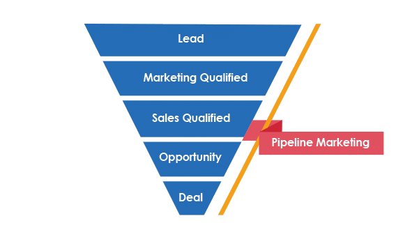

Funcionalitats de SAP CX
SAP CX ofereix una àmplia gamma de funcionalitats dissenyades per millorar la gestió empresarial.
Funcions del CRM
-

Contacte amb el client
Enfortiu la fidelitat del client per ajudar els equips a resoldre problemes més ràpid, personalitzar el suport i adaptar-se a escala.
-

Canal de vendes
Pots visualitzar les ventes realitzades amb automatitzacions, configuració, etc.
-
Automatització de màrqueting
Converteix més ràpid els leads en ingressos, millora els resultats i ajuda que s'adapti a les necessitats dels compradors.
-
Servei al client unificat
Ofereix un servei ràpid i connectat a tots els canals.
Avantatges i Desavantatges
- Avantatges: Integració potent, alta seguretat, escalabilitat.
- Desavantatges: Cost inicial elevat, formació necessària.